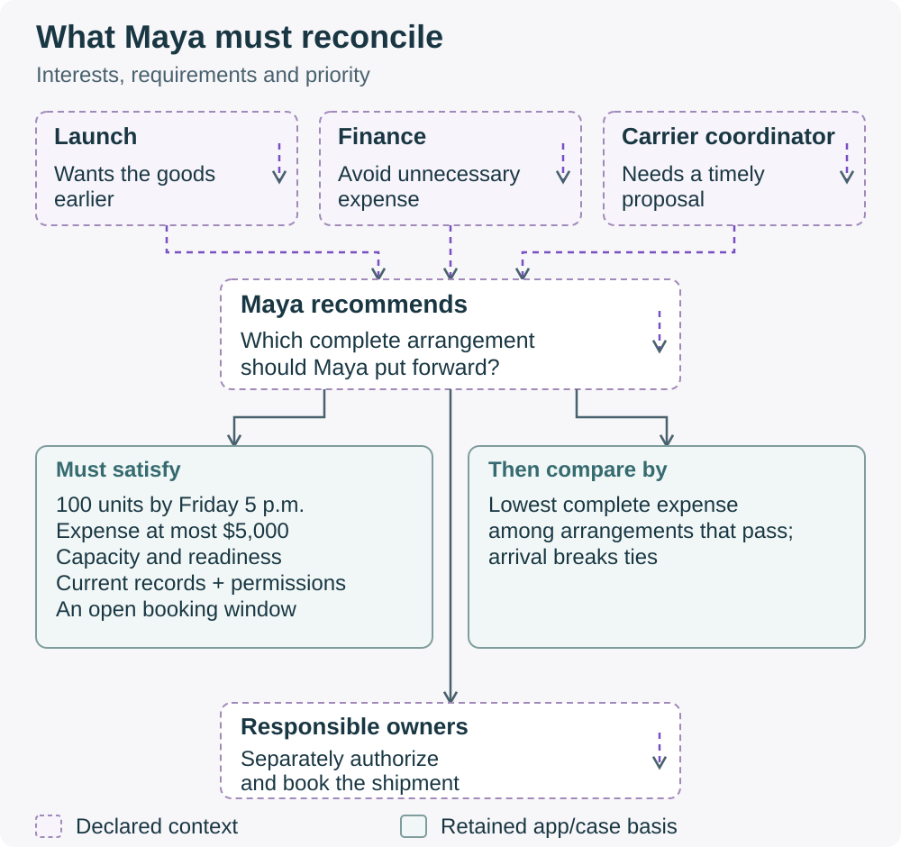
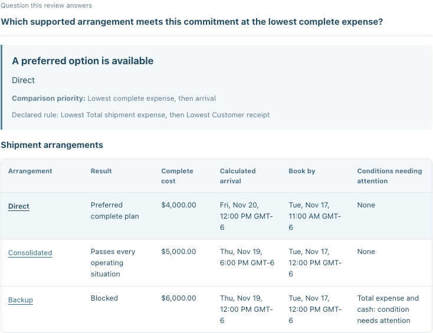
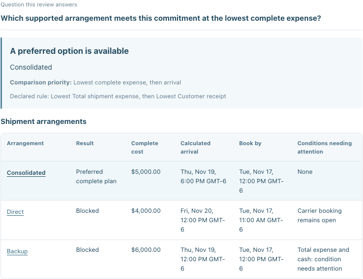
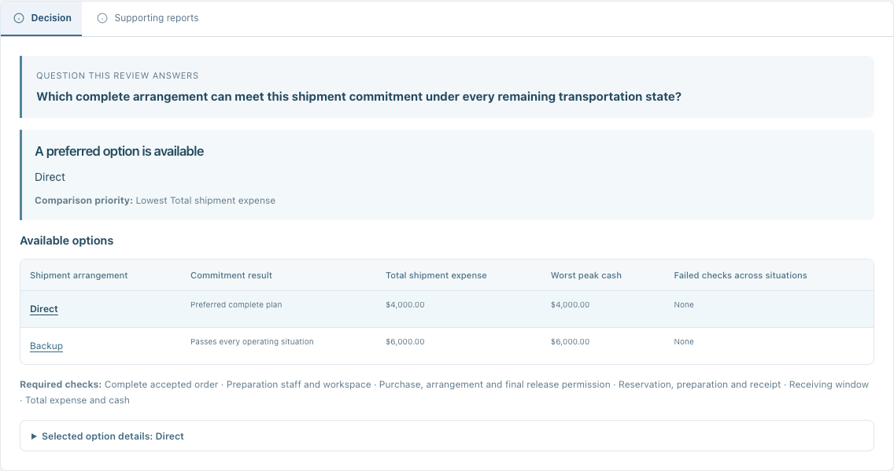
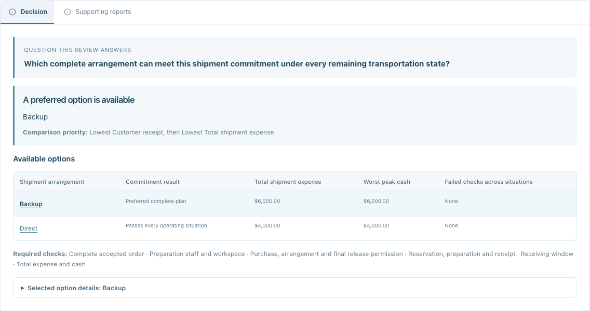
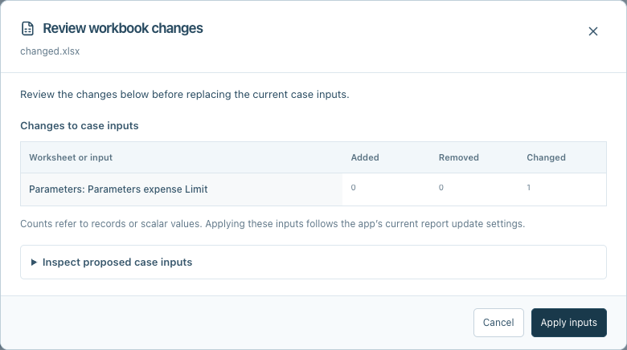
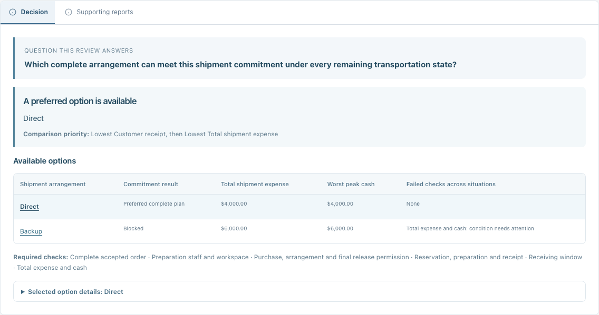

Maya owns the shipment recommendation for a fictional supplier launch. The customer needs all 100 units by Friday at 5 p.m. Launch wants the goods earlier, finance wants her to avoid unnecessary expense, and the carrier coordinator needs a proposal while a booking window is still open.
Her team has agreed a practical rule: choose the lowest complete expense among arrangements that meet every recorded requirement; use arrival to break ties. Direct costs $4,000. Consolidated costs $5,000. Paying the premium needs a reason Maya can explain.
Decision Lab checks each complete arrangement—the freight option together with its preparation, resources, dates and supporting records. These connected choices are an instance of the Arrangement Problem: a route or quote needs the rest of the required work to fit around it. The comparison below keeps that policy and the shipment records fixed. Only the assessment time changes.
Maya, her team, quotes and records are fictional teaching inputs. The opening uses the current cost-first operating app; the later priority tutorial retains its separate earlier release. Sources and scope explain both.


At 8 a.m., save $1,000. At 11:30, protect the remaining option.
Shared basis. ORD-104; 100 units; Thursday noon–Friday 5 p.m. receiving window; $5,000 expense limit. Same quotes, resources, current confirmations and cost-first app.
What changes. Assessment as of: 8 a.m. → 11:30 a.m. This one control updates current time and the earliest selection time together. All times are November 17, 2026, UTC−06:00.
A · The cheaper option is still bookable
Propose Direct · $4,000 · Friday noon
- Assessment time
- 8 a.m.
- Carrier booking windows
- Direct until 11 a.m.; Consolidated until noon


Maya can meet the promise for less. She seeks the required authorization and reservation while Direct remains available.
B · Direct’s booking window has closed
Propose Consolidated · $5,000 · Thursday 6 p.m.
- Assessment time
- 11:30 a.m.
- Carrier booking windows
- The same 11 a.m. and noon cutoffs


Maya can justify the $1,000 premium because Direct is no longer bookable for this unreserved shipment. Consolidated’s other requirements still pass.
What this means for the decision. One policy produces different supported proposals as the available responses change. Earlier arrival alone does not justify the premium; the closed booking window does.
At 8 a.m., Maya can propose Direct. It meets the promise for less, and the carrier still accepts reservations. Consolidated’s earlier arrival does not itself justify another $1,000 under this policy.
If the same shipment is still unbooked at 11:30, Maya can propose Consolidated. Direct’s 11 a.m. booking cutoff has passed; Consolidated remains supported until noon. The premium now protects a remaining workable response. If its confirmation or another requirement fails, the next action is to obtain support or escalate the promise.
These are alternative review situations, not an instruction to delay the cheaper booking. A reservation already made is a separate operating fact; the planner’s cutoff does not cancel it.
The reusable approach behind Maya’s review.
We treat this as a constrained shipment-fulfillment problem. The decision pattern is a bounded shipment commitment: compare complete arrangements, establish which meet the requirements, apply the agreed priority and put forward a supported response. The clock changes which arrangements remain feasible; the cost-first policy then prefers the least expensive of those that pass. That structure can be reused without carrying Maya’s conclusion into another shipment.
Hermod Labs authored this workflow and configured its assessment app. The app supplies supporting reasoning about requirements and preference; the workflow organizes the questions, reviews and commitment steps. This is how we connect decision patterns and reasoning patterns through shared structure. People still establish the shipment’s requirements and priority, review its records, choose a response and supply authority for the specific action. A preferred arrangement supplies neither that authority nor evidence that freight has been reserved.
A shared reference: the shipment review.
Maya needs the team to agree the promise, inspect the requirements and know who can authorize and carry out the supported response. The fixed policy makes the reason for a changed recommendation visible.
- Maya and operationsCheck the facts.Confirm the quotes, dates, readiness records and permissions for each option.
- Launch and financeApply the agreed priority.Find the least expensive complete response still supported in this context.
- Responsible ownersApprove and arrange.Authorize the proposal, book the shipment and follow through on delivery.
View the wider shipment process
The process also includes gathering records, resolving blockers, obtaining approvals and executing the shipment. This article demonstrates the planning review; the opening holds the operating policy fixed while the earlier tutorial explores two original options and alternative priorities. The chart places that review within the wider business work.

On a small screen, scroll sideways to follow the process.
The earlier two-option exercise below changes the business priority rather than the clock. Its original apps, inputs and hands-on steps remain available separately. The series guide distinguishes that authoring branch from the current cost-first operating story.
Earlier tutorial: compare priorities and test a tighter budget
A separate exercise: what changes when the priority changes?
The opening changed the clock under one policy. The earlier published tutorial below changes a different thing: the declared business priority. It compares Direct with the $6,000 Backup option under the original $6,500 limits, before Consolidated was added. These are separate frozen apps and inputs, preserved so the two lessons can be distinguished.


Put the shipment facts on the table.
What counts as an arrangement?
Think of an arrangement as how the shipment’s choices can fit together: possible combinations of shipping location, route, dates, people, resources and permissions within the rules and current circumstances. A shipment plan records a proposed combination. Here Maya compares two complete combinations, Direct and Backup; a changed quote, readiness record or spending limit can change which combinations remain workable.
The order contains 100 cases. SP-A and SP-B identify the two shipping locations, or ship points. Each complete quote includes packing, release and freight costs.
| Shipment option | Complete expense | Arrival |
|---|---|---|
| Direct, through SP-A | $4,000 | Friday, November 20, 2026 at noon |
| Backup, through SP-B | $6,000 | Thursday, November 19, 2026 at noon |
The receiving window is Thursday, November 19 at noon through Friday, November 20 at 5 p.m. All times use UTC−06:00. Both locations are recorded as transportation-registered for this shipment. The supplied schedules, resources and permissions support either option. The expense limit and available-cash limit are each $6,500.
What gets checked?
The example supplies the facts needed for both arrangements to pass. The app checks six business questions against those recorded facts:
- Can it carry the complete order? The order is for 100 cases. Each arrangement has capacity for all 100; the example assumes those goods are available.
- Is the ship point registered for this shipment? The supplied records say both SP-A and SP-B are transportation-registered for the same order, revision, recipient, ship date and review profile. A portal listing alone would not establish that.
- Can the people and resources finish preparation? A capable packing worker has two hours available, followed by a capable release officer for 30 minutes. Their calendars and the packing bench have enough capacity, with no competing bookings recorded.
- Are the necessary permissions recorded? Each arrangement has recorded permission to select it and authorization for the responsible officer to release the shipment. Both cover this exact shipment and the relevant times. Available budget does not grant either permission.
- Can the timing work? Selection is set for Tuesday at 8 a.m., before the noon reservation cutoff. Packing and release finish before Wednesday’s departure. Both quoted arrivals meet the receipt deadline and fall within the receiving window.
- Does it fit the expense and cash limits? The complete quotes are $4,000 and $6,000, with no verification fee. Each stays within the recorded $6,500 expense limit and $6,500 peak-cash limit.
These are supplied teaching facts and configured checks. The result tells you whether the recorded arrangement passes them; it does not confirm that an external record is current or carry out the shipment.
See all 18 configured checks
- The arrangement has capacity for the complete accepted order.
- A transportation-registration record covers its ship point and this exact shipment in every retained operating state.
- The packing worker has the packing capability.
- The packing worker’s calendar covers the entire packing activity.
- The release officer has the release capability.
- The release officer’s calendar covers the entire release activity.
- Preparation and existing bookings together stay within each person’s and resource’s capacity.
- A shipment-specific permission to select the arrangement is valid at selection time.
- The release officer’s shipment-specific grant covers the complete release activity.
- The proposed selection time is not in the past.
- Any verification-fee payment is scheduled no later than selection.
- Selection occurs by the reservation cutoff.
- Packing followed by final release finishes by departure.
- Arrival is no later than the required receipt time.
- Arrival falls within the receiving window.
- The complete arrangement fee plus the verification fee stay within the total-expense limit.
- The payment schedule stays within the peak-cash limit.
- A nonzero verification fee has a shipment-specific purchase grant and fits both its grant ceiling and the purchase cap.
The verification fee is $0 in this comparison. No paid verification purchase is needed, and its payment-time entry already satisfies the timing check. These two verification-related checks do not establish additional shipment readiness.
Passing, preferred and approved.
- Feasible: the complete option passes the recorded mandatory checks.
- Preferred: it ranks first among the passing options under the agreed priority.
- Approved: the responsible business owners have authorized the action. Passing a review does not book or release the shipment.
Agree which priority should govern.
Finance and the launch team are asking different questions. Finance asks, “Which workable option costs least?” The launch team asks, “Which workable option gets the goods here first?”
Maya uses two shipment reviews to make that difference visible. Both use the same shipment facts and the same 18 mandatory checks. The Lowest-cost shipment review puts expense first. The Earliest-arrival shipment review puts arrival time first and uses expense to break ties.
Neither priority can make a failed requirement disappear. The team first needs options that work, then agreement on which of those options it prefers.
Compare the two recommendations.
The cost-first review prefers Direct: $4,000, arriving Friday. The arrival-first review prefers Backup: $6,000, arriving Thursday. Both options pass all 18 checks in both reviews.
| What Maya compares | Cost first | Arrival first |
|---|---|---|
| Shipment facts | The same order, options, readiness records and limits | |
| Mandatory checks | Same 18 checks; both arrangements pass | |
| Business priority | Lowest expense | Earliest arrival; expense breaks ties |
| Preferred option | Direct · $4,000 · Friday | Backup · $6,000 · Thursday |
Cost first
Direct · $4,000 · Friday


Arrival first
Backup · $6,000 · Thursday


Maya can now separate a readiness disagreement from a priority disagreement. The supplied records support both options. What remains is whether the business has a reason to spend $2,000 for the earlier receipt.
Both arrivals meet the receiving window. This example records no monetary benefit for the extra day, so the reports do not establish that the additional expense creates $2,000 of business value. The launch owner needs to explain the operating need for that earlier arrival.
Read the values in the screenshots
The decision screen leads with the preferred option and Comparison priority. Available options keeps both complete arrangements visible, with dollar expenses and any failed conditions. None under failed checks means that both pass the recorded requirements.
Select an arrangement, then expand Selected option details for its complete assignment and requirement results. Schedule, resource, permission and finance views are available from those details. Worst peak cash is the largest cash amount needed at any point; here it equals the quoted expense.
Within Reports, choose Supporting reports to open the full retained analysis, then Decision to return to the compact comparison. Your selected report and open decision details are retained when switching. The complete report keeps the original USD-cent and minute values; changing the display does not change the calculation.
Work through Maya’s shipment.
Choose a review below. Decision Lab opens the shipment example and automatically creates the Order fulfillment collection when needed. Opening the other review adds it to the same collection. Each review starts with Maya’s supplied shipment facts.
The review leads with its answer and a compact comparison. Inspecting an arrangement opens its supporting detail; it does not choose or authorize that arrangement. Complete reports remain available when you need to trace a condition.
Wait for Reports current, choose Reports → Decision, and start with the finding, Comparison priority and Available options. Cost first prefers Direct at $4,000; arrival first prefers Backup for its Thursday arrival. Both options pass in both reviews. Open selected-option details only when you need to inspect the conditions behind a row.
Inputs opens the case information; these retained tutorial apps use YAML for the complete case. Forms is available when an app supplies an authored form. Both shows inputs beside reports—it is a layout choice. Moving between these views does not choose or authorize a shipment.
To continue a shipment already saved in this browser, return to Collections → Order fulfillment → Saved cases and choose Resume case. Reopening the same review link in the same tab also preserves your edits. To start again from the supplied facts, choose Inputs, expand Work with Excel and select Start another case. Review and replace the fictional values before using a case for your own shipment.
What if finance sets a $5,000 limit?
Now Maya tests a separate scenario: finance lowers this shipment’s expense limit from $6,500 to $5,000. The cash limit stays at $6,500. She keeps the arrival-first review, so the question is whether an earlier arrival remains available within that tighter limit.
- Get the case workbook. In the arrival-first working case, choose Inputs, expand Work with Excel and select Download Excel. What you can edit in Excel explains the editable inputs.
- Change the expense limit. On the Parameters worksheet, find Parameters expense Limit in column L. Change L2 from
650000to500000. These amounts are USD cents: 500,000 cents is $5,000. Leave the cash limit in M2 and every other value unchanged. - Review the change. Save the workbook and choose Upload Excel. Review workbook changes shows one changed expense-limit value. Uploading creates a preview; the current case is unchanged until you choose Apply inputs.


Choose Apply inputs, wait for Reports current, and return to Reports → Decision. The decision screen shows the current preferred option and the condition blocking Backup.
Backup now fails the expense requirement. Direct still passes and becomes preferred, even though the review still favors earlier arrival among the options that pass. A preferred arrival time cannot override the spending limit.
The $5,000-limit scenario
Only Direct at $4,000 passes


Select Backup and expand Selected option details to inspect its failed expense requirement. The full condition and operating situation remain available through the detail controls or Supporting reports. If Thursday receipt is essential, Maya needs a decision about funding or the commitment; ranking the options differently cannot make the extra $1,000 fit the limit.
To restore the original comparison, change L2 back to 650000 and apply it, or use Inputs → Work with Excel → Start another case to return to the supplied starting facts.
Reuse the review on the next shipment.
This earlier tutorial illustrates the same decision pattern described above, using separate priorities and frozen apps. Reusing the approach on another order still requires suitable requirements, current records and an agreed priority; it does not carry over the original findings or authority.
Maya can explain what changed her proposal.
For the cost-first operating case, Maya proposes Direct at $4,000 while it remains bookable. In the alternative 11:30 review, she proposes Consolidated at $5,000 because Direct’s booking window has closed. She can point to the changed time and failed condition instead of presenting a more expensive answer without an explanation.
The earlier tutorial illustrates a separate choice the business makes about its policy: arrival first prefers Backup when both original options pass; a tighter expense limit blocks it. Those reports do not supply a monetary benefit for earlier receipt. The launch owner still needs to justify that objective and the responsible owner must authorize the spend.
The decision is visible in its context: the promise, available options, current records, mandatory requirements and agreed priority. Maya and the operating owners still review the facts, approve the proposal, reserve freight and follow through on delivery.
See how the CLI separates changed shipments, responsible follow-up and expiring opportunities, then follow Maya in the SDK desk as a newly received confirmation changes a blocked case into a supported proposal. The continuing workflow keeps that chosen response separate from authority, reservation and actual delivery evidence.